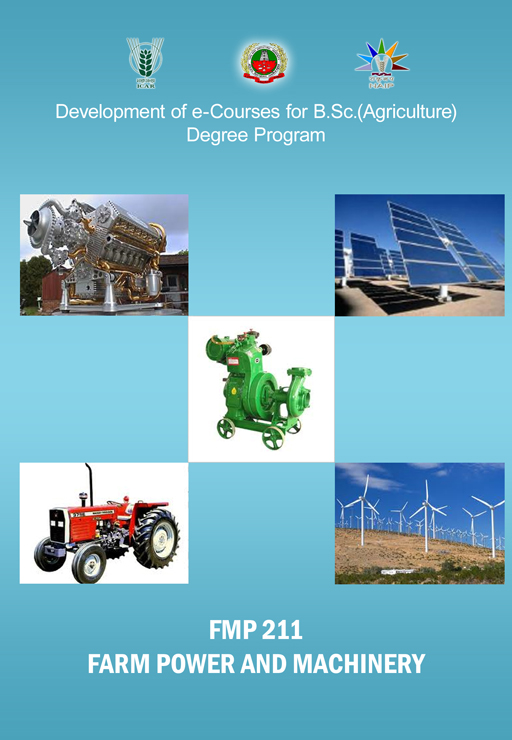

FARM POWER AND MACHINERY
:: (FMP 211 ) :: Credits (1+1)

Select the lecture topic...
Lec 01 -
Farm Power in India...
Lec 02 -
Two Stroke & Four Stroke ...
Lec 03 -
Different Systems of IC Engine.
Lec 04 -
Tractors- Types and Utilities
Lec 05 -
Tillage - objectives and types...
Lec 06 -
Primary Tillage - Objectives..
Lec 07 -
Secondary Tillage Equipment...
Lec 08 -
Sowing Methods - Seed ...
Lec 10 -
Paddy Transplanters, Types...
Lec 11 -
Implements For Intercultural..
Lec 12 -
Sprayers & their functions...
Lec 13 -
Harvesting Tools & ...
Lec 14 -
Tools For Horticultural Crops...
Lec 15 -
Equipment For Land...
Lec 16 -
Cost Of Operation Of Farm ...
Lec 17 -
Tractor And Implement ...